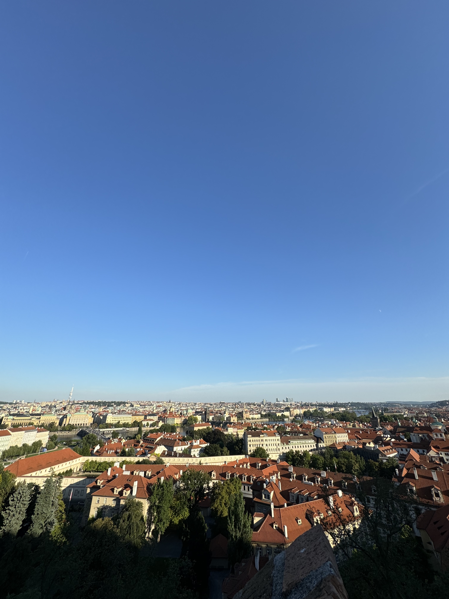
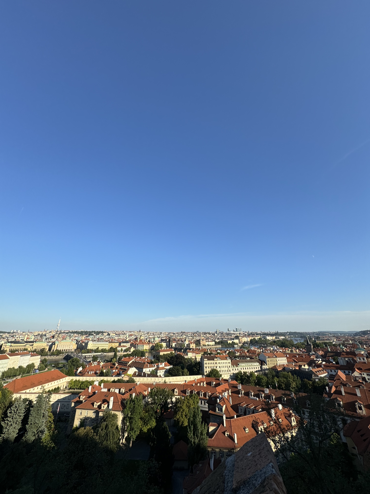

Food


I had fantastic Czech food for dinner at a restaurant below my hostel. The soup was called Kulajda with mushroom and dill. Also, it was my first time having roasted duck like that. A lot of places in Europe, but especially in Prague, serve beer with a lot of foam. I didn’t like that, but it is just the European style. Here in the States, bartenders would keep repouring the beer until there was no foam.

Went to lunch with my friend Sasha at his favorite restaurant. They had a wide variety of meat options and sides. I got delicious try-tip, roast beef, and carrot soup. I enjoyed all the food I had in Prague, as it was very meat-focused.
Views
 

Prague had fantastic views from above. I went to a cathedral and cemetery up on a hill with Sasha on one side of the city with amazing views and took some great pictures. Then, later, we took the metro to the other side of the city, which had even better views. We had to climb up many stairs to reach another viewpoint, but it was well worth it.
Dog Bar
Dog Bar is easily the best bar I’ve ever been to. I went with some mates from my hostel and met some other people from Norway who were electric. Dog Bar is like a maze with many different rooms, each having its own bar serving a different drink menu. There were around 3 stages of live music and DJs. Truly a one of a kind and special place. Later, I met a guy from San Francisco, and he gave me a bunch of tips on stuff to do back home.
Overall
Absolutely the surprise of the trip. I’m pumped I went because it was a last-minute freestyle decision. My friend Jacob talked extremely highly of Prague and I listened to him and went. I learned Jacob is always right with his travel recommendations because he was also the one who told me to go to Hula Hula club in Croatia. Shout out Jacob!